- 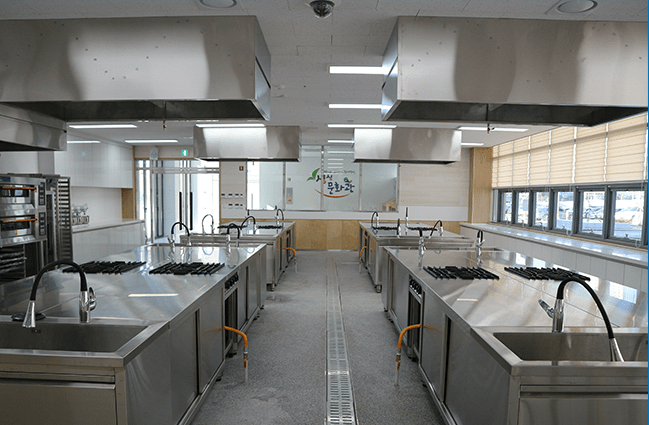 최다 32명 수용가능한 요리교실
- 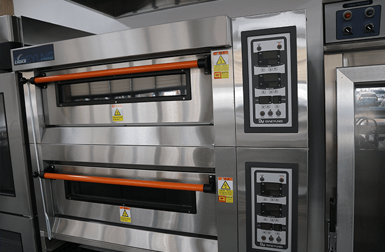 요리교실 오븐
- 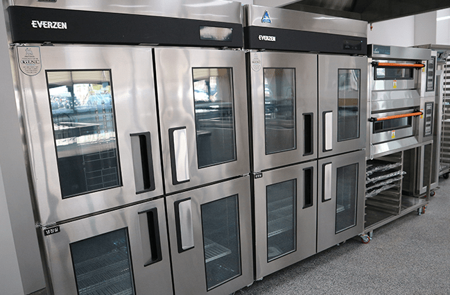 요리교실 안이 보이는 냉장고.
- 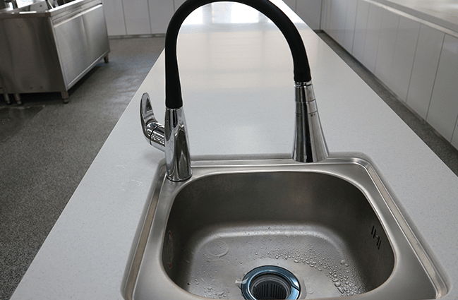 요리교실의 차별화 된 수전.
- 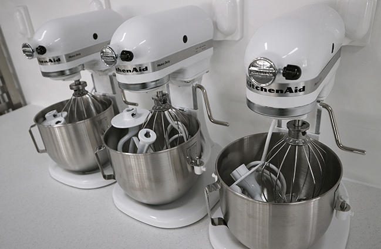 요리교실 반죽기계.
- 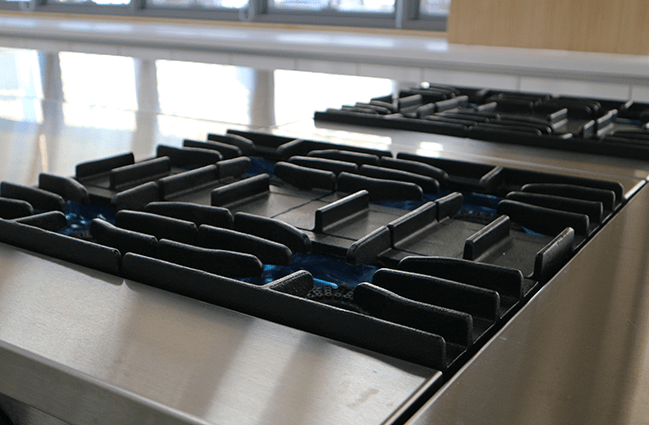 화력 좋은 렌지, 잘끓어요.
- 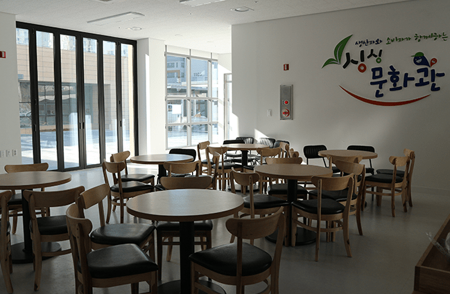 요리교실 쉬는 시간엔 여기서 쉬세요.
- 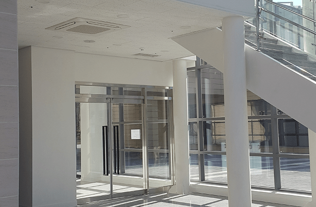 싱싱문화관 1층은 요리교실 2층은 싱싱밥상
- 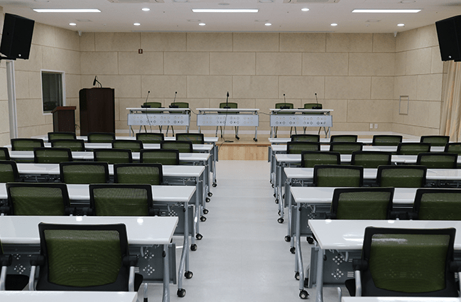 교육장. (음향시설, 빔프로젝트 사용이 가능한 교육장 : 160석 완비)
- 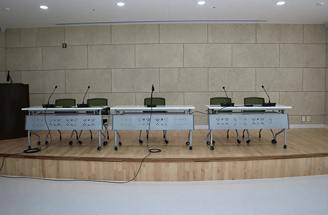 교육장 아치형 강단.
- 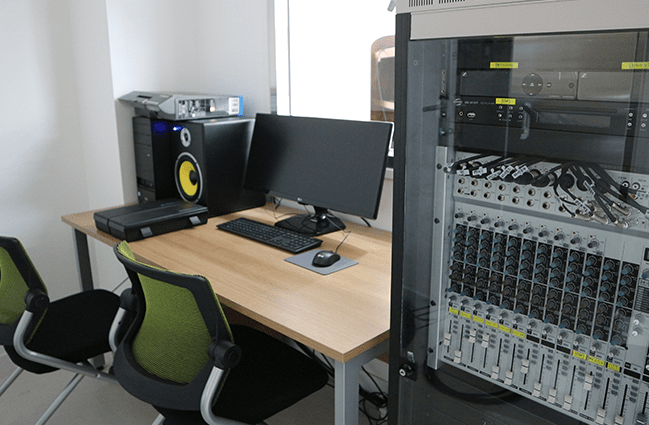 방송장비 및 음향시설 조정실.
- 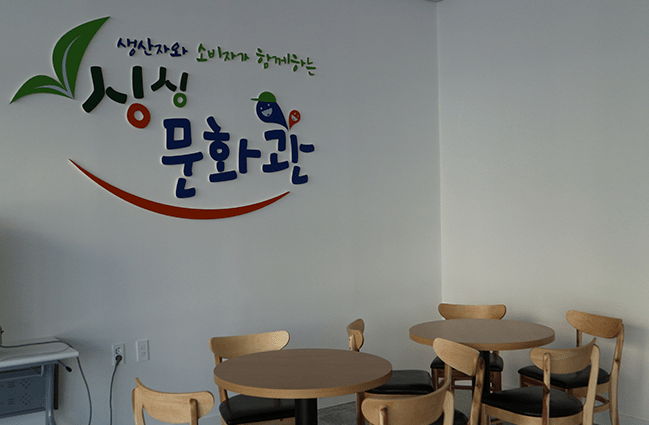 1층 교육장 옆 휴게 공간.
- 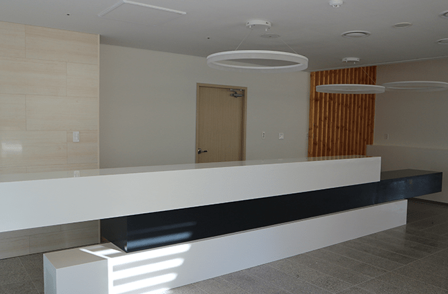 싱싱밥상 안내데스크. 접수와 계산은 이곳에서.
- 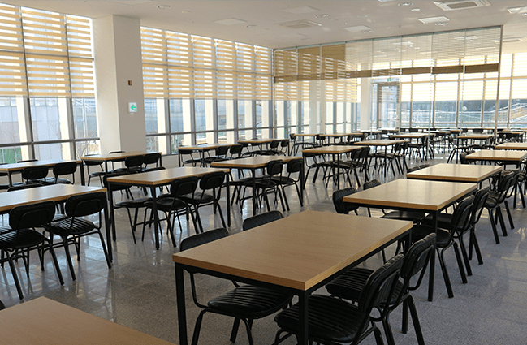 싱싱밥상 전경.(단체 환영)
- 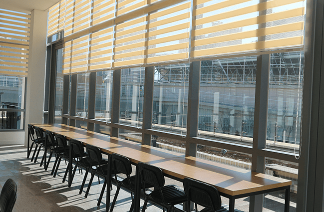 싱싱밥상, 창밖을 보면서 브런치 하고 싶은 공간.
- 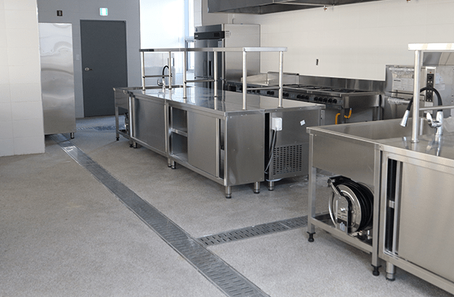 공유부엌 전경&작업대.
- 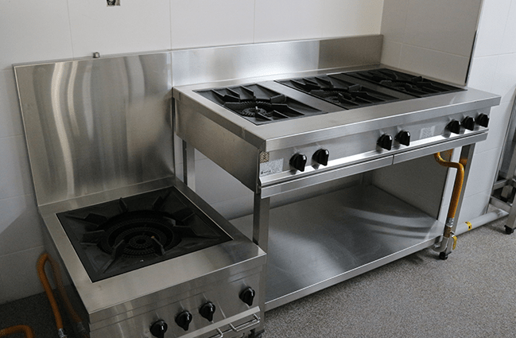 공유부엌 렌지.
- 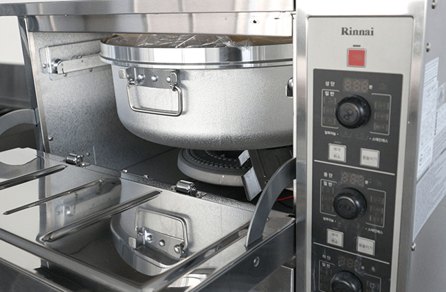 공유부엌 밥솥. 저 밥솥은 몇인분일까요.
- 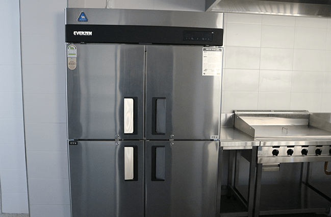 공유부엌 대형 냉장고.
- 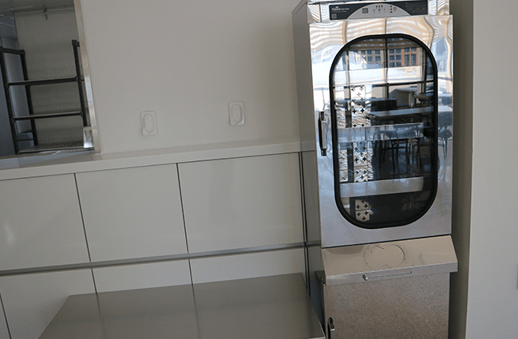 공유부엌 소독기.
- 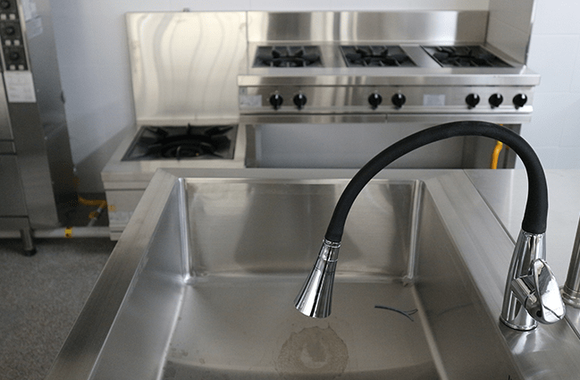 공유부엌 작업대 수전.
- 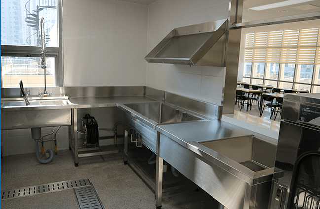 공유부엌 퇴식구.
- 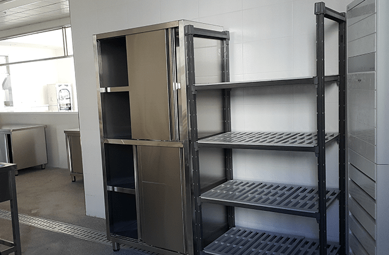 싱싱밥상 공유부엌 내 집기류.
- 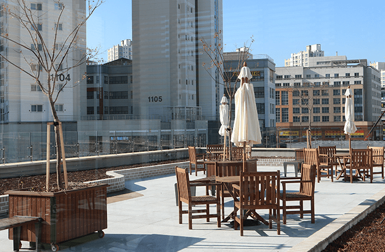 옥상정원. 따뜻할땐 여기서도 식사가능.